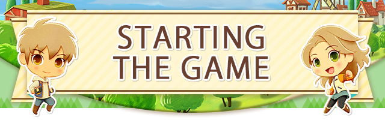
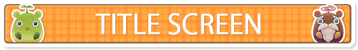
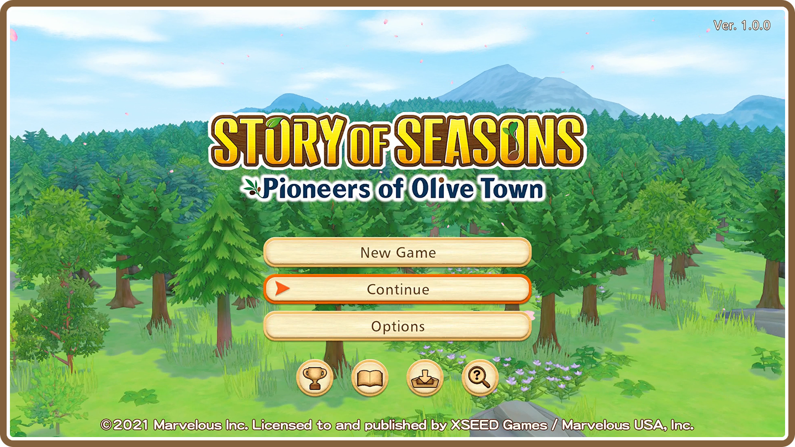
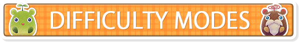
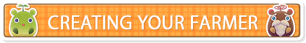
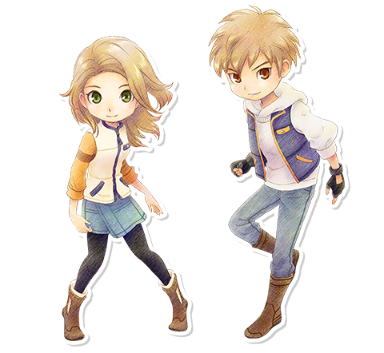

Once you've started up the game, all you have to do is press the A Button on the title screen to bring up the menu. Pick whatever option suits your fancy!

| New Game | Start a new adventure from the beginning. |
|---|---|
| Continue | Load a saved game. Only available if you have an existing save. |
| Options | Change settings for the game. |
| Achievements | View achievements for the game here. |
| Credits | Roll the staff credits. |
| Downloadable Content | Check and manage downloadable content you've purchased. |
| View Manual | Open the online manual to check controls and how to play the game. |
- About Saving
-
You can save your progress by pressing the + Button and selecting "Save," or examining the journal in your house. You can have up to ten save files, and the game will autosave when you go to sleep in your house.

When starting a new game, you'll be able to choose between Seedling Mode or Normal Mode. Seedling Mode makes it easier to progress through the game: items will be worth more money when shipped, and stamina will decrease at a slower rate. Normal Mode, on the other hand, allows you to start your farm life with a bit more of a challenge! If you feel you've chosen the wrong mode, don't worry! You'll be able to change modes at any time from the options menu.

After selecting a difficulty mode, it's time to create a farmer all your own! You can choose everything from their voice, their hairstyle, and what their name will be.
| Appearance | Choose how you want your character to look. Several presets are also available to pick from. |
|---|---|
| Motorcycle Color | Choose the color of your motorcycle. This can be changed later. |
| Name | Give your farmer a name. (Up to 8 characters max.) |
| Birthday | Choose your birthday from one of the four main seasons: Spring, Summer, Autumn, or Winter. Each season has 28 days to choose from. |
| Gender | Choose whether you'd like to play as a boy or girl. |
| Farm Name | Choose a name for your farm. (Up to 12 characters max.) |
Once you start the game, you have the chance to create a farmer all your own! You can choose everything from their voice, their hairstyle, and what their name will be.

| Appearance | Choose how you want your character to look. Several presets are also available to pick from. |
|---|---|
| Motorcycle Color | Choose the color of your motorcycle. This can be changed later. |
| Name | Give your farmer a name. (Up to 8 characters max.) |
| Birthday | Choose your birthday from one of the four main seasons: Spring, Summer, Autumn, or Winter. Each season has 28 days to choose from. |
| Gender | Choose whether you'd like to play as a boy or girl. |
| Farm Name | Choose a name for your farm. (Up to 12 characters max.) |